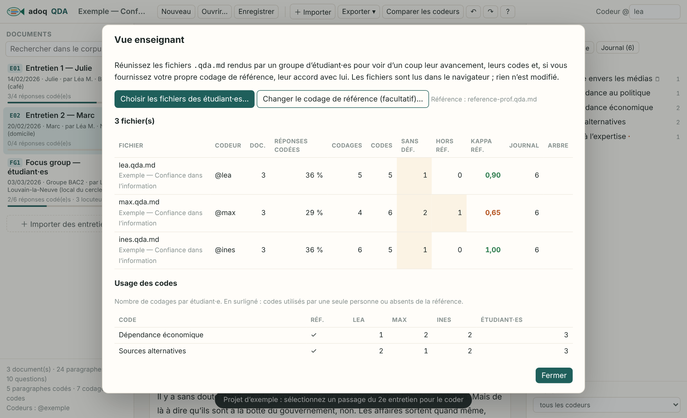

Vue enseignant¶
La vue enseignant (lien sur la page d’accueil, ou menu Exporter › Vue enseignant…) réunit les fichiers .qda.md rendus par un groupe. Les fichiers sont lus dans le navigateur ; rien n’est modifié.

- Choisir les fichiers des étudiant·es (plusieurs à la fois).
- Facultatif : choisir le codage de référence, c’est-à-dire votre propre codage du même corpus.
Pour chaque étudiant·e : la part des réponses codées, le nombre de codages et de codes, les codes sans définition, les codes absents de la référence et le kappa moyen avec la référence. Le tableau « Usage des codes » montre qui utilise quoi et met en évidence les codes isolés.
Ouvrir la synthèse du groupe crée un projet qui réunit tous les codages, chacun signé par son auteur·e (les identifiants en double sont renommés) : idéal pour projeter les désaccords en séance. Exporter le tableau produit un fichier CSV.
Un scénario de travaux pratiques¶
- Préparer un projet avec deux ou trois entretiens courts, un arbre de codes et ses définitions ; le verrouiller avec un code.
- Distribuer le fichier
.qda.mdet le fichier de l’application. - Les étudiant·es codent à l’aveugle, chacun·e avec son identifiant, puis rendent leur fichier.
- En séance, ouvrir la vue enseignant avec votre codage de référence ; projeter la synthèse et discuter les codes au kappa faible.
- Par binômes, fusionner les copies et construire un codage de consensus.
- Variante inductive : laisser l’arbre déverrouillé et comparer, grâce au journal, la manière dont chaque binôme a construit sa grille.